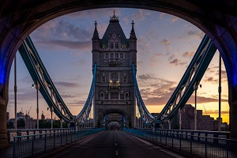
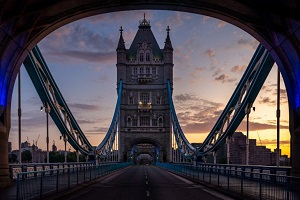

Nesta página é possível visualizar diversas imagens de monumentos importantes de Londres, bem como um vídeo completo da cidade e um poema, escrito por Manuel A. Domingues, sobre a mesma.
O Big Ben é um dos monumentos mais importantes da cidade, e conhecido em todo o mundo.

A London Eye também é um dos monumentos mais importantes que pertencem à cidade. Quando dentro das cabides, é possível ter uma vista magnífica da cidade.
Londres
Manuel A.Domingos
Nunca cheguei a escrever um poema sobre a cidade ser à noite um carrosselde luzes. nem outro sobrea fotografia onde fiquei com arenvergonhado. ou sobre o frio e o passeio por Hyde Park, onde pássaros vieram comer às tuas mãose eu deixei fugir alguns versossó para te poder fotografar. ou sobre a casa estilo vitoriano, que prometeuocultar todas as palavras que dissemosum ao outro, quando ao deitarnos encolhíamos debaixo de vários cobertores e mesmo assimtínhamos frio. ou o definitivo,aquele que falaria sobre Greenwiche o meridiano que me ensinou a importância do tempo que sempre falta, principalmentequando numa das pontes quis dizer amo-te,mas havia um autocarro para apanhar. e era já o último.

Não há nada mais característico de Londres do que o Big Ben, a London eye e os telefones de rua.


A cor característica de Londres, é sem dúvida o vermelho.
Os carros que se conduzem do lado contrário, as pessoas apressadas no metro - não há nada mais característico de Londres que isso mesmo.


 
